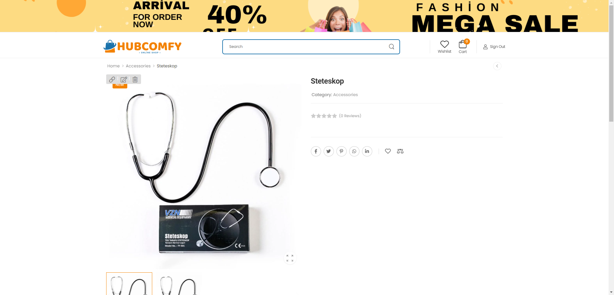
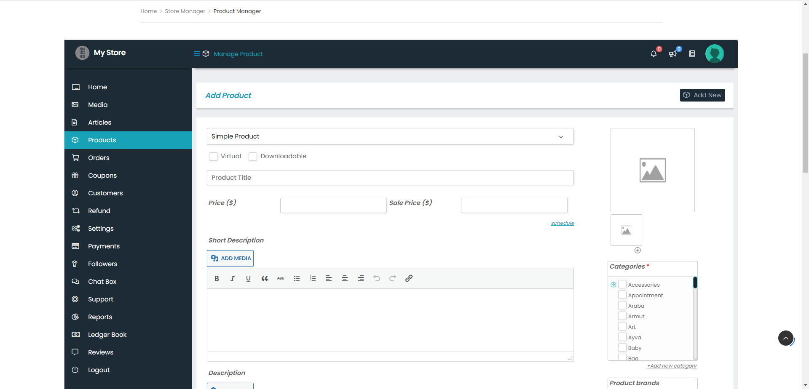
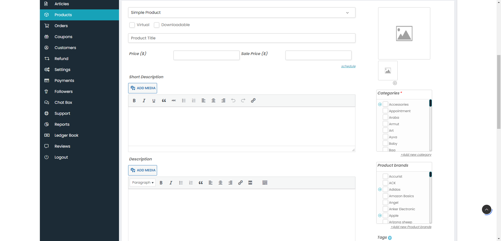
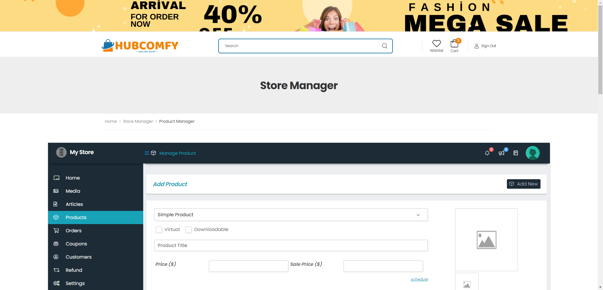
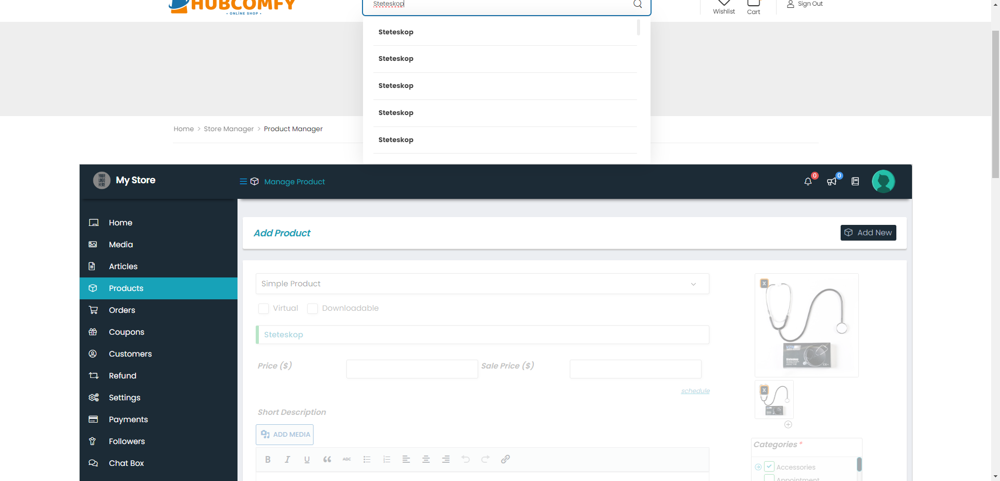
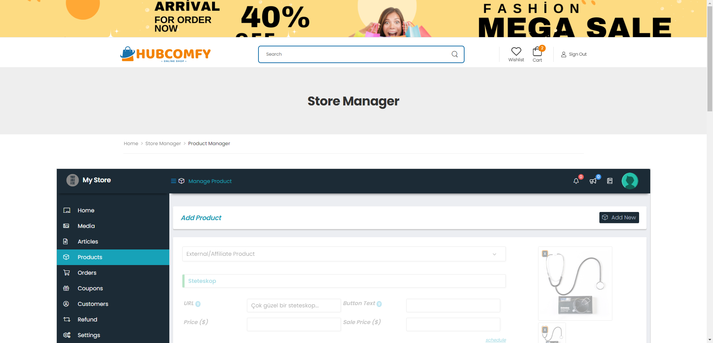

Tests
18 test(s) passed
13 test(s) failed, 0 others
Timeline (seconds)
-
US14 || TC01-DropDown Menü Feb 27, 2023 03:38:37 AM passFeb 27, 2023 03:38:37 AM Feb 27, 2023 03:39:20 AM 0h 0m 43s+680msAmaç: Simple Product, Variable Product, Grouped Product, External - Affiliate Product seçenekleri olmalı
Status Timestamp Details info_outline 3:38:37 AM Test başladı. info_outline 3:38:55 AM Login işlemi yapıldı. info_outline 3:39:20 AM Product Manager sayfasına girildi. info_outline 3:39:20 AM DropDown menüde Simple Product, Variable Product, Grouped Product, External - Affiliate Product seçeneklerin olup olmadığı kontrol edildi. check_circle 3:39:20 AM Test başarıyla tamamlandı. ✅ check_circle 3:39:20 AM TEST SONUCU:
Simple Product, Variable Product, Grouped Product, External - Affiliate Product seçeneklerinin olduğu doğrulanmıştır. -
US14 || TC02-Ürün Fotoğrafı Ekleme Feb 27, 2023 03:39:20 AM passFeb 27, 2023 03:39:20 AM Feb 27, 2023 03:39:55 AM 0h 0m 34s+449msAmaç: Ürün fotoğrafı (büyük olan-Featured Img) eklenebilmeli
Status Timestamp Details info_outline 3:39:20 AM Test başladı. info_outline 3:39:30 AM Login işlemi yapıldı. info_outline 3:39:52 AM Product Manager sayfasına girildi. info_outline 3:39:54 AM Ürün fotoğrafı (büyük olan-Featured Img) eklenip eklenemediği kontrol edilmiştir. check_circle 3:39:55 AM Test başarıyla tamamlandı. ✅ check_circle 3:39:55 AM TEST SONUCU:
Ürün fotoğrafı (büyük olan-Featured Img) eklenebildiği doğrulanmıştır. -
US14 || TC03-Ürün Fotoğrafı Ekleme Feb 27, 2023 03:39:55 AM passFeb 27, 2023 03:39:55 AM Feb 27, 2023 03:40:30 AM 0h 0m 35s+161msAmaç: Ürün fotoğrafı (küçük olan-Gallery Images) eklenebilmeli
Status Timestamp Details info_outline 3:39:55 AM Test başladı. info_outline 3:40:04 AM Login işlemi yapıldı. info_outline 3:40:27 AM Product Manager sayfasına girildi. info_outline 3:40:29 AM Ürün fotoğrafı (küçük olan-Gallery Images) eklenebilirliği kontrol edilmiştir. check_circle 3:40:30 AM Test başarıyla tamamlandı. ✅ check_circle 3:40:30 AM TEST SONUCU:
Ürün fotoğrafı (küçük olan-Gallery Images) eklenebildiği doğrulanmıştır. -
US14 || TC04-Ürün Fotoğrafı Ekleme Feb 27, 2023 03:40:30 AM failFeb 27, 2023 03:40:30 AM Feb 27, 2023 03:41:20 AM 0h 0m 50s+39msAmaç: Ürüne ait bir tane küçük (Gallery Images) resim eklendiğinde, bu resimden ürün sayfasında bir tane olmalı
Status Timestamp Details info_outline 3:40:30 AM Test başladı. info_outline 3:40:39 AM Login işlemi yapıldı. info_outline 3:41:02 AM Product Manager sayfasına girildi. info_outline 3:41:19 AM Ürüne ait bir tane küçük (Gallery Images) resim eklendiğinde, bu resimden ürün sayfasında bir tane olup olmadığı kontrol edilmiştir. cancel 3:41:20 AM Test başarısız oldu! ❌ cancel 3:41:20 AM BUG BULUNDU: 🐞
Ürüne ait Featured image ve Gallery image eklendiğinde, ürün sayfasında gallery image'a ait resim iki kez gösteriliyor. Gallery image bölümüne Featured image'dan farklı bir resim eklenince sorun olmuyor, ama sadece bir resim eklemek isteyen birisinin ürün sayfası düzgün görüntülenmemiş oluyorcancel 3:41:20 AM EKRAN GÖRÜNTÜSÜ
(Resmi büyütmek için üzerine tıklayınız.)  -
US14 || TC05-Product Title Feb 27, 2023 03:41:20 AM passFeb 27, 2023 03:41:20 AM Feb 27, 2023 03:41:54 AM 0h 0m 33s+374msAmaç: Product Title kutusuna metin girilebilmeli
Status Timestamp Details info_outline 3:41:20 AM Test başladı. info_outline 3:41:30 AM Login işlemi yapıldı. info_outline 3:41:53 AM Product Manager sayfasına girildi. info_outline 3:41:53 AM Product Title kutusuna metin girilebiliriği kontrol edilmiştir. check_circle 3:41:54 AM Test başarıyla tamamlandı. ✅ check_circle 3:41:54 AM TEST SONUCU:
Product Title kutusuna metin girilebildiği doğrulanmıştır. -
US14 || TC06-Short Description Feb 27, 2023 03:41:54 AM passFeb 27, 2023 03:41:54 AM Feb 27, 2023 03:42:27 AM 0h 0m 32s+728msAmaç: Short Description kutusuna metin girilebilmeli
Status Timestamp Details info_outline 3:41:54 AM Test başladı. info_outline 3:42:03 AM Login işlemi yapıldı. info_outline 3:42:26 AM Product Manager sayfasına girildi. info_outline 3:42:26 AM Short Description kutusuna metin girilip girilemediği kontrol edilmiştir. check_circle 3:42:27 AM Test başarıyla tamamlandı. ✅ check_circle 3:42:27 AM TEST SONUCU:
Short Description kutusuna metin girilebildiği doğrulanmıştır. -
US14 || TC07-Description Kutusuna Feb 27, 2023 03:42:27 AM passFeb 27, 2023 03:42:27 AM Feb 27, 2023 03:42:59 AM 0h 0m 32s+436msAmaç: Description kutusuna metin girilebilmeli
Status Timestamp Details info_outline 3:42:27 AM Test başladı. info_outline 3:42:36 AM Login işlemi yapıldı. info_outline 3:42:58 AM Product Manager sayfasına girildi. info_outline 3:42:59 AM Description kutusuna metin girilip girilemediği kontrol edilmiştir. check_circle 3:42:59 AM Test başarıyla tamamlandı. ✅ check_circle 3:42:59 AM TEST SONUCU:
Description kutusuna metin girilebildiği doğrulanmıştır. -
US14 || TC08-Categories Seçme Feb 27, 2023 03:42:59 AM passFeb 27, 2023 03:42:59 AM Feb 27, 2023 03:43:32 AM 0h 0m 32s+762msAmaç: Categories seçenekleri kontrol kutusuna tıklandığında seçilebilmeli
Status Timestamp Details info_outline 3:42:59 AM Test başladı. info_outline 3:43:08 AM Login işlemi yapıldı. info_outline 3:43:31 AM Product Manager sayfasına girildi. info_outline 3:43:31 AM Categories seçenekleri kontrol kutusuna tıklandığında seçilip seçilemediği kontrol edilmiştir. check_circle 3:43:32 AM Test başarıyla tamamlandı. ✅ check_circle 3:43:32 AM TEST SONUCU:
Categories seçenekleri kontrol kutusuna tıklandığında seçilebildiği doğrulanmıştır. -
US14 || TC09-Categories Seçme Feb 27, 2023 03:43:32 AM failFeb 27, 2023 03:43:32 AM Feb 27, 2023 03:44:03 AM 0h 0m 31s+528msAmaç: Categories seçenekleri metne tıklandığında seçilebilmeli
Status Timestamp Details info_outline 3:43:32 AM Test başladı. info_outline 3:43:41 AM Login işlemi yapıldı. info_outline 3:44:03 AM Product Manager sayfasına girildi. info_outline 3:44:03 AM Categories seçenekleri metne tıklandığında seçilip seçilemediği kontrol edilmiştir. cancel 3:44:03 AM Test başarısız oldu! ❌ cancel 3:44:03 AM BUG BULUNDU: 🐞
Categories bölümündeki seçeneklere ait metinlere tıklandığında kontrol kutusu seçili hale gelmiyor. Bu özelliğin eklenmesi faydalı olur.cancel 3:44:03 AM EKRAN GÖRÜNTÜSÜ
(Resmi büyütmek için üzerine tıklayınız.)
-
US14 || TC10-Categories Seçme Feb 27, 2023 03:44:04 AM passFeb 27, 2023 03:44:04 AM Feb 27, 2023 03:44:38 AM 0h 0m 34s+610msAmaç: Categories bölümünde birden fazla kategori seçilebilmeli
Status Timestamp Details info_outline 3:44:04 AM Test başladı. info_outline 3:44:13 AM Login işlemi yapıldı. info_outline 3:44:38 AM Product Manager sayfasına girildi. info_outline 3:44:38 AM Categories bölümünde birden fazla kategori seçilip seçilemediği kontrol edilmiştir. check_circle 3:44:38 AM Test başarıyla tamamlandı. ✅ check_circle 3:44:38 AM TEST SONUCU:
Categories bölümünde birden fazla kategorinin seçilebilmeli doğrulanmıştır. -
US14 || TC11-Categories Ekleme Feb 27, 2023 03:44:38 AM passFeb 27, 2023 03:44:38 AM Feb 27, 2023 03:45:17 AM 0h 0m 38s+637msAmaç: Categories bölümüne yeni kategori eklenebilmeli
Status Timestamp Details info_outline 3:44:38 AM Test başladı. info_outline 3:44:47 AM Login işlemi yapıldı. info_outline 3:45:10 AM Product Manager sayfasına girildi. info_outline 3:45:16 AM Categories bölümüne yeni kategori eklenip eklenemediği kontrol edilmiştir. check_circle 3:45:17 AM Test başarıyla tamamlandı. ✅ check_circle 3:45:17 AM TEST SONUCU:
Categories bölümüne yeni kategori eklenebildiği doğrulanmıştır. -
US14 || TC12-Categories Ekleme Feb 27, 2023 03:45:17 AM failFeb 27, 2023 03:45:17 AM Feb 27, 2023 03:45:49 AM 0h 0m 31s+487msAmaç: Categories bölümüne yeni kategori eklerken Categories Name bölümü boş bırakıldığında bu kutuda bir uyarı mesajı görüntülenmeli
Status Timestamp Details info_outline 3:45:17 AM Test başladı. info_outline 3:45:26 AM Login işlemi yapıldı. info_outline 3:45:48 AM Product Manager sayfasına girildi. info_outline 3:45:48 AM Categories bölümüne yeni kategori eklerken Categories Name bölümü boş bırakıldığında bu kutuda bir uyarı mesajı çıkıp çıkmadığı kontrol edilmiştir. cancel 3:45:49 AM Test başarısız oldu! ❌ cancel 3:45:49 AM BUG BULUNDU: 🐞
Category eklerken tüm alanları boş bırakıp Add butonuna basınca hiçbir uyarının çıkmadığı tespit edilmiştir.cancel 3:45:49 AM EKRAN GÖRÜNTÜSÜ
(Resmi büyütmek için üzerine tıklayınız.)
-
US14 || TC13-Categories Bölümünün Alfabetik Sıralanması Feb 27, 2023 03:45:49 AM failFeb 27, 2023 03:45:49 AM Feb 27, 2023 03:46:27 AM 0h 0m 37s+443msAmaç: Categories bölümüne yeni kategori eklerken Parent category menüsündeki seçenekler alfabetik sırada görünmeli
Status Timestamp Details info_outline 3:45:49 AM Test başladı. info_outline 3:45:58 AM Login işlemi yapıldı. info_outline 3:46:21 AM Product Manager sayfasına girildi. info_outline 3:46:26 AM Categories bölümüne yeni kategori eklerken Parent category menüsündeki seçeneklerin alfabetik sırada görünüp görünmediği kontrol edilmiştir. cancel 3:46:27 AM Test başarısız oldu! ❌ cancel 3:46:27 AM BUG BULUNDU: 🐞
Parent category bölümündeki seçenekler alfabetik olarak sıralanmadığı için karmaşık görünüyor ve aranan seçeneğin bulunması zor oluyor. Sıralama, ekleme sırasına göre gerçekleşiyor. Alfabetik olarak sıralanması yararlı olur.cancel 3:46:27 AM EKRAN GÖRÜNTÜSÜ
(Resmi büyütmek için üzerine tıklayınız.)
-
US14 || TC14-Categories Ekleme Feb 27, 2023 03:46:27 AM failFeb 27, 2023 03:46:27 AM Feb 27, 2023 03:47:00 AM 0h 0m 33s+395msAmaç: Categories bölümüne yeni kategori eklendiğinde, eklenen kategori Parent Category menüsünde görünmeli
Status Timestamp Details info_outline 3:46:27 AM Test başladı. info_outline 3:46:36 AM Login işlemi yapıldı. info_outline 3:46:58 AM Product Manager sayfasına girildi. cancel 3:47:00 AM Test başarısız oldu! ❌ cancel 3:47:00 AM BUG BULUNDU: 🐞
Parent category bölümündeki seçenekler alfabetik olarak sıralanmadığı için karmaşık görünüyor ve aranan seçeneğin bulunması zor oluyor. Sıralama, ekleme sırasına göre gerçekleşiyor. Alfabetik olarak sıralanması yararlı olur.cancel 3:47:00 AM EKRAN GÖRÜNTÜSÜ
(Resmi büyütmek için üzerine tıklayınız.)  -
US14 || TC15-Product Brands Feb 27, 2023 03:47:01 AM passFeb 27, 2023 03:47:01 AM Feb 27, 2023 03:47:33 AM 0h 0m 32s+90msAmaç: Product brands kontrol kutusuna tıklandığında seçilebilmeli
Status Timestamp Details info_outline 3:47:01 AM Test başladı. info_outline 3:47:10 AM Login işlemi yapıldı. info_outline 3:47:32 AM Product Manager sayfasına girildi. info_outline 3:47:33 AM Product brands kontrol kutusuna tıklandığında seçilip seçilemediği kontrol edilmiştir. check_circle 3:47:33 AM Test başarıyla tamamlandı. ✅ check_circle 3:47:33 AM TEST SONUCU:
Product brands kontrol kutusuna tıklandığında seçilebildiği doğrulanmıştır. -
US14 || TC16-Product Brands Feb 27, 2023 03:47:33 AM failFeb 27, 2023 03:47:33 AM Feb 27, 2023 03:48:05 AM 0h 0m 32s+149msAmaç: Product brands metne tıklandığında seçilebilmeli
Status Timestamp Details info_outline 3:47:33 AM Test başladı. info_outline 3:47:42 AM Login işlemi yapıldı. info_outline 3:48:05 AM Product Manager sayfasına girildi. info_outline 3:48:05 AM Product brands metne tıklandığında seçilip seçilemediği kontrol edilmiştir. cancel 3:48:05 AM Test başarısız oldu! ❌ cancel 3:48:05 AM BUG BULUNDU: 🐞
Product brands bölümündeki seçeneklere ait metinlere tıklandığında kontrol kutusu seçili hale gelmiyor. Bu özelliğin eklenmesi faydalı olur.cancel 3:48:05 AM EKRAN GÖRÜNTÜSÜ
(Resmi büyütmek için üzerine tıklayınız.)
-
US14 || TC17-Product Brands Ekleme Feb 27, 2023 03:48:06 AM passFeb 27, 2023 03:48:06 AM Feb 27, 2023 03:48:45 AM 0h 0m 39s+245msAmaç: Product brands bölümüne yeni marka eklenebilmeli
Status Timestamp Details info_outline 3:48:06 AM Test başladı. info_outline 3:48:15 AM Login işlemi yapıldı. info_outline 3:48:38 AM Product Manager sayfasına girildi. info_outline 3:48:39 AM Product brands bölümüne yeni marka eklenip eklenemediği kontrol edilmiştir. check_circle 3:48:45 AM Test başarıyla tamamlandı. ✅ check_circle 3:48:45 AM TEST SONUCU:
Product brands bölümüne yeni marka eklenebildiği doğrulanmıştır. -
US14 || TC18-Product Brands Ekleme Feb 27, 2023 03:48:45 AM failFeb 27, 2023 03:48:45 AM Feb 27, 2023 03:49:17 AM 0h 0m 31s+668msAmaç: Product brands bölümüne yeni marka eklerken Product brands Name bölümü boş bırakıldığında bu kutuda bir uyarı mesajı görüntülenmeli
Status Timestamp Details info_outline 3:48:45 AM Test başladı. info_outline 3:48:54 AM Login işlemi yapıldı. info_outline 3:49:16 AM Product Manager sayfasına girildi. info_outline 3:49:16 AM Product brands bölümüne yeni marka eklerken Product brands Name bölümü boş bırakıldığında bu kutuda bir uyarı mesajı çıkıp çıkmadığı kontrol edilmiştir. cancel 3:49:17 AM Test başarısız oldu! ❌ cancel 3:49:17 AM BUG BULUNDU: 🐞
Product brands Name eklerken tüm alanları boş bırakıp Add butonuna basınca hiçbir uyarı çıkmıyor.Sitede herhangi bir aksiyon da oluşmuyor.cancel 3:49:17 AM EKRAN GÖRÜNTÜSÜ
(Resmi büyütmek için üzerine tıklayınız.) -
US14 || TC19-Product Brands Alfabetik Sıralanmalı Feb 27, 2023 03:49:17 AM failFeb 27, 2023 03:49:17 AM Feb 27, 2023 03:49:53 AM 0h 0m 35s+837msAmaç: Product brands bölümüne yeni marka eklerken Parent Taxonomy menüsündeki seçenekler alfabetik sırada görünmeli
Status Timestamp Details info_outline 3:49:17 AM Test başladı. info_outline 3:49:26 AM Login işlemi yapıldı. info_outline 3:49:49 AM Product Manager sayfasına girildi. info_outline 3:49:53 AM Product brands bölümüne yeni marka eklerken Parent Taxonomy menüsündeki seçenekler alfabetik sırada görünüp görünmediği kontrol edilmiştir. cancel 3:49:53 AM Test başarısız oldu! ❌ cancel 3:49:53 AM BUG BULUNDU: 🐞
Parent taxonomy bölümündeki seçenekler alfabetik olarak sıralanmadığı için karmaşık görünüyor ve aranan seçeneğin bulunması zor oluyor. Sıralama, ekleme sırasına göre gerçekleşiyor. Alfabetik olarak sıralanması faydalı olur.cancel 3:49:53 AM EKRAN GÖRÜNTÜSÜ
(Resmi büyütmek için üzerine tıklayınız.)
-
US14 || TC20-Product Brands Feb 27, 2023 03:49:53 AM failFeb 27, 2023 03:49:53 AM Feb 27, 2023 03:50:28 AM 0h 0m 34s+846msAmaç: Product brands bölümüne yeni marka eklendiğinde, eklenen ürün Parent Taxonomy menüsünde görünmeli
Status Timestamp Details info_outline 3:49:53 AM Test başladı. info_outline 3:50:02 AM Login işlemi yapıldı. info_outline 3:50:26 AM Product Manager sayfasına girildi. cancel 3:50:28 AM Test başarısız oldu! ❌ cancel 3:50:28 AM BUG BULUNDU: 🐞
Parent taxonomy bölümündeki seçenekler alfabetik olarak sıralanmadığı için karmaşık görünüyor ve aranan seçeneğin bulunması zor oluyor. Sıralama, ekleme sırasına göre gerçekleşiyor. Alfabetik olarak sıralanması faydalı olur.cancel 3:50:28 AM EKRAN GÖRÜNTÜSÜ
(Resmi büyütmek için üzerine tıklayınız.)  -
US14 || TC21-Product Brands Seçme Feb 27, 2023 03:50:29 AM failFeb 27, 2023 03:50:29 AM Feb 27, 2023 03:51:01 AM 0h 0m 32s+298msAmaç: Product brands bölümünde sadece bir seçenek seçilebilmeli
Status Timestamp Details info_outline 3:50:29 AM Test başladı. info_outline 3:50:38 AM Login işlemi yapıldı. info_outline 3:51:01 AM Product Manager sayfasına girildi. info_outline 3:51:01 AM Product brands bölümünde sadece bir seçenek seçilebildiği kontrol edilmiştir. cancel 3:51:01 AM Test başarısız oldu! ❌ cancel 3:51:01 AM BUG BULUNDU: 🐞
Marka seçeneği unique olmalı, ama bu bölümden birden fazla seçenek seçilebilmekte ve seçilen markalar ürün sayfasında alt alta sıralanmaktadır.cancel 3:51:01 AM EKRAN GÖRÜNTÜSÜ
(Resmi büyütmek için üzerine tıklayınız.)  -
US14 || TC22-Tag Ekleme Feb 27, 2023 03:51:02 AM passFeb 27, 2023 03:51:02 AM Feb 27, 2023 03:51:34 AM 0h 0m 32s+92msAmaç: Tags eklenebilmeli
Status Timestamp Details info_outline 3:51:02 AM Test başladı. info_outline 3:51:11 AM Login işlemi yapıldı. info_outline 3:51:33 AM Product Manager sayfasına girildi. info_outline 3:51:33 AM Tags eklenip eklenemediği kontrol edilmiştir. check_circle 3:51:34 AM Test başarıyla tamamlandı. ✅ check_circle 3:51:34 AM TEST SONUCU:
Tags eklenebildiği doğrulanmıştır. -
US14 || TC23-Tags Ekleme Feb 27, 2023 03:51:34 AM passFeb 27, 2023 03:51:34 AM Feb 27, 2023 03:52:05 AM 0h 0m 31s+466msAmaç: Tags bölümüne birden fazla tag eklenebilmeli
Status Timestamp Details info_outline 3:51:34 AM Test başladı. info_outline 3:51:42 AM Login işlemi yapıldı. info_outline 3:52:05 AM Product Manager sayfasına girildi. info_outline 3:52:05 AM Tags bölümüne birden fazla tag eklenip eklenemediği kontrol edilmiştir. check_circle 3:52:05 AM Test başarıyla tamamlandı. ✅ check_circle 3:52:05 AM TEST SONUCU:
Tags bölümüne birden fazla tag eklenebildiği doğrulanmıştır. -
US14 || TC24-Kayıtlı Tag Ekleme Feb 27, 2023 03:52:05 AM passFeb 27, 2023 03:52:05 AM Feb 27, 2023 03:52:40 AM 0h 0m 34s+726msAmaç: Tags bölümüne kayıtlı taglardan biri seçilerek tag eklenebilmeli
Status Timestamp Details info_outline 3:52:05 AM Test başladı. info_outline 3:52:14 AM Login işlemi yapıldı. info_outline 3:52:38 AM Product Manager sayfasına girildi. info_outline 3:52:39 AM Tags bölümüne kayıtlı taglardan biri seçilerek tag eklenip eklenemediği kontrol edilmiştir. check_circle 3:52:40 AM Test başarıyla tamamlandı. ✅ check_circle 3:52:40 AM TEST SONUCU:
Tags bölümüne kayıtlı taglardan biri seçilerek tag eklenebildiği doğrulanmıştır. -
US14 || TC25-Catalog Visibility Menüsü Feb 27, 2023 03:52:40 AM passFeb 27, 2023 03:52:40 AM Feb 27, 2023 03:53:12 AM 0h 0m 32s+24msAmaç: Catalog visibility; Shop and search results olarak seçilebilmeli
Status Timestamp Details info_outline 3:52:40 AM Test başladı. info_outline 3:52:49 AM Login işlemi yapıldı. info_outline 3:53:11 AM Product Manager sayfasına girildi. info_outline 3:53:11 AM Catalog visibility; Shop and search results olarak seçilip seçilemediği kontrol edilmiştir. check_circle 3:53:12 AM Test başarıyla tamamlandı. ✅ check_circle 3:53:12 AM TEST SONUCU:
Catalog visibility; Shop and search results olarak seçilebildiği doğrulanmıştır. -
US14 || TC26-Catalog Visibility Menüsü Feb 27, 2023 03:53:12 AM passFeb 27, 2023 03:53:12 AM Feb 27, 2023 03:53:45 AM 0h 0m 33s+526msAmaç: Catalog visibility; Shop only olarak seçilebilmeli
Status Timestamp Details info_outline 3:53:12 AM Test başladı. info_outline 3:53:22 AM Login işlemi yapıldı. info_outline 3:53:44 AM Product Manager sayfasına girildi. info_outline 3:53:45 AM Catalog visibility; Shop only olarak seçilip seçilemediği kontrol edilmiştir. check_circle 3:53:45 AM Test başarıyla tamamlandı. ✅ check_circle 3:53:45 AM TEST SONUCU:
Catalog visibility; Shop only olarak seçilebildiği doğrulanmıştır. -
US14 || TC27-Catalog Visibility İnceleme Feb 27, 2023 03:53:45 AM failFeb 27, 2023 03:53:45 AM Feb 27, 2023 03:54:32 AM 0h 0m 46s+501msAmaç: Catalog visibility; Shop only olarak seçilediğinde ürüne arama motorundan ulaşılamamalı
Status Timestamp Details info_outline 3:53:45 AM Test başladı. info_outline 3:53:54 AM Login işlemi yapıldı. info_outline 3:54:18 AM Product Manager sayfasına girildi. info_outline 3:54:23 AM Catalog visibility; Shop only olarak seçilediğinde ürüne arama motorundan ulaşılıp ulaşılamadığı kontrol edilmiştir. cancel 3:54:32 AM Test başarısız oldu! ❌ cancel 3:54:32 AM BUG BULUNDU: 🐞
Shop only seçeneği seçildiğinde, ürüne arama motorundan da ulaşılabilmektedir. Halbuki bu seçenek seçildiğinde arama motorundan bulunamaması gerekir.cancel 3:54:32 AM EKRAN GÖRÜNTÜSÜ
(Resmi büyütmek için üzerine tıklayınız.)
-
US14 || TC28-Catalog Visibility Feb 27, 2023 03:54:32 AM passFeb 27, 2023 03:54:32 AM Feb 27, 2023 03:55:06 AM 0h 0m 33s+80msAmaç: Catalog visibility; Search results only olarak seçilebilmeli
Status Timestamp Details info_outline 3:54:32 AM Test başladı. info_outline 3:54:42 AM Login işlemi yapıldı. info_outline 3:55:05 AM Product Manager sayfasına girildi. info_outline 3:55:05 AM Catalog visibility; Search results only olarak seçilip seçilemediği kontrol edilmiştir. check_circle 3:55:06 AM Test başarıyla tamamlandı. ✅ check_circle 3:55:06 AM TEST SONUCU:
Catalog visibility; Search results only olarak seçilebildiği doğrulanmıştır. -
US14 || TC29-Catalog Visibility Feb 27, 2023 03:55:06 AM passFeb 27, 2023 03:55:06 AM Feb 27, 2023 03:55:39 AM 0h 0m 33s+513msAmaç: Catalog visibility; Hidden olarak seçilebilmeli
Status Timestamp Details info_outline 3:55:06 AM Test başladı. info_outline 3:55:14 AM Login işlemi yapıldı. info_outline 3:55:38 AM Product Manager sayfasına girildi. info_outline 3:55:39 AM Catalog visibility; Hidden olarak seçilip seçilemediği kontrol edilmiştir. check_circle 3:55:39 AM Test başarıyla tamamlandı. ✅ check_circle 3:55:39 AM TEST SONUCU:
Catalog visibility; Hidden olarak seçilebildiği doğrulanmıştır. -
US14 || TC30-Catalog Visibility Feb 27, 2023 03:55:39 AM failFeb 27, 2023 03:55:39 AM Feb 27, 2023 03:56:16 AM 0h 0m 36s+986msAmaç: Catalog visibility; Hidden olarak seçilediğinde ürüne arama motorundan ulaşılamamalı
Status Timestamp Details info_outline 3:55:39 AM Test başladı. info_outline 3:55:48 AM Login işlemi yapıldı. info_outline 3:56:10 AM Product Manager sayfasına girildi. info_outline 3:56:14 AM Catalog visibility; Hidden olarak seçilediğinde ürüne arama motorundan ulaşılıp ulaşılamadığı kontrol edilmiştir. cancel 3:56:16 AM Test başarısız oldu! ❌ cancel 3:56:16 AM BUG BULUNDU: 🐞
Hidden seçeneği seçildiğinde, ürüne arama motorundan ulaşılabilmektedir. Halbuki ürüne hiçbir şekilde ulaşılamaması gerekir.cancel 3:56:16 AM EKRAN GÖRÜNTÜSÜ
(Resmi büyütmek için üzerine tıklayınız.)  -
US14 || TC31-DropDown Menü Feb 27, 2023 03:56:17 AM failFeb 27, 2023 03:56:17 AM Feb 27, 2023 03:56:55 AM 0h 0m 38s+492msAmaç: External/Affiliate Product seçeneği içindeki URL kutusuna URL formatı dışında veri girilememeli
Status Timestamp Details info_outline 3:56:17 AM Test başladı. info_outline 3:56:26 AM Login işlemi yapıldı. info_outline 3:56:48 AM Product Manager sayfasına girildi. info_outline 3:56:54 AM External/Affiliate Product seçeneği içindeki URL kutusuna URL formatı dışında veri girilip girilemediği kontrol edilmiştir. cancel 3:56:55 AM Test başarısız oldu! ❌ cancel 3:56:55 AM BUG BULUNDU: 🐞
DropDown menüden External/Affiliate Product seçildiğinde URL kutusu açılıyor. Bu kutu, girilen datanın URL formatında olup olmadığını kontrol etmiyor.cancel 3:56:55 AM EKRAN GÖRÜNTÜSÜ
(Resmi büyütmek için üzerine tıklayınız.) 
Dashboard
Tests
31
Steps
0
Start
Feb 27, 2023 03:38:36 AM
End
Feb 27, 2023 03:56:56 AM
Time Taken
0h 18m 19s+342ms
Environment
| Name | Value |
|---|---|
| Uygulama | TestNG Projesi |
| Test Türü | Regression |
| Grup | Batch103 |
| Takım | TEAM-8 |
| User Story | US14 | Vendor (Satıcı) olarak, siteye kayıt yapılabilmeli.. |
| QA | Gürkay Birinci |